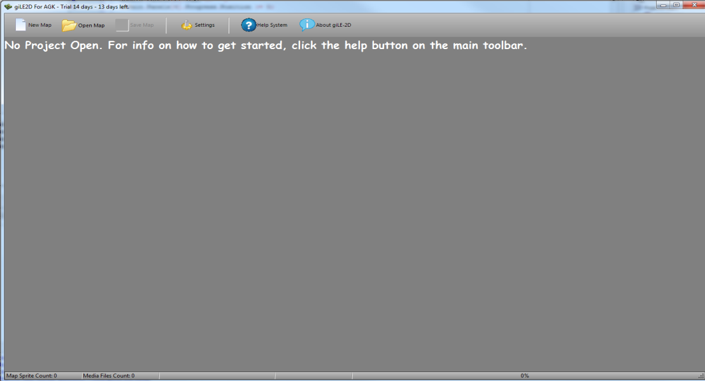
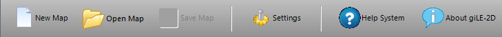
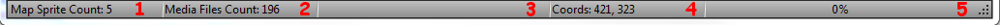

| Getting Started |
|
I hope that you find giLE2D an easy tool to use. However, there is nothing
like getting off on the wrong foot! So, with that in mind, this little
"getting started" guide should put you on the right track and get you up
and running in no time! As you can see, there is also a video to accompany this section for those of you more visually inclined! |
| If you are running giLE2D for the first time, you may see the registration dialog first. However, I am assuming you have the full version, so we'll go from there. |
|  |
|
When you run giLE2D, the main window will be
shown. Immediately, you will see that we urge you to read the getting
started section (so if you are reading this, well done!). Lets take a look at the main toolbar. |
|  |
| New Map: This button allows you to create a brand new, blank map inside an existing AGK project. For further information, please see the Creating Your First Map section. |
| Open Map: This button allows you to choose and open an existing map for you to work on. For further information, please see the Open A Map section. |
| Save Map: As it says, this button allows you to save the map you are currently working on. For further information, please see the Saving Your Work section. |
| Settings: This button allows you to change the program settings. For further information, please see the Changing giLE2D Settings section. |
| Help System: This button launches the mini-website you are currently reading... the help system. |
| About giLE2D: The about button will display a window that shows you the version and registration state of giLE2D, along with credits and some legal stuff. |
| Lets now take a look at the giLE2D status bar, located at the bottom of the main window: |
|  |
| Panel 1: This panel in the status bar shows you how many sprites you have in your map. Sprites and their function will be explained in detail in the Adding Sprites section. |
| Panel 2: This panel shows you how many sprites are available to you from the media folder. More information can be found about the media folder in the Setting Up Your Media section. |
| Panel 3: This panel will show file processing information, such as when you are loading a map or saving a map. |
| Panel 4: This panel shows you the coordinates, in pixels, of the mouse within the map canvas. More information is in the Adding Sprites section. |
| Panel 5: This is the progress bar panel. When performing lengthy operations, this will give you feedback on the operations progress. |
| Main Menu |